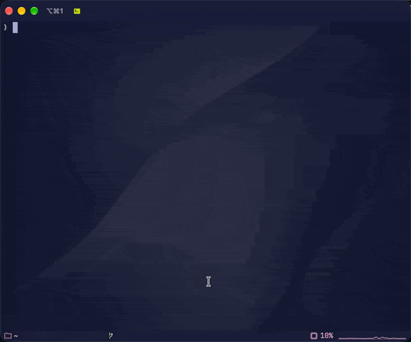
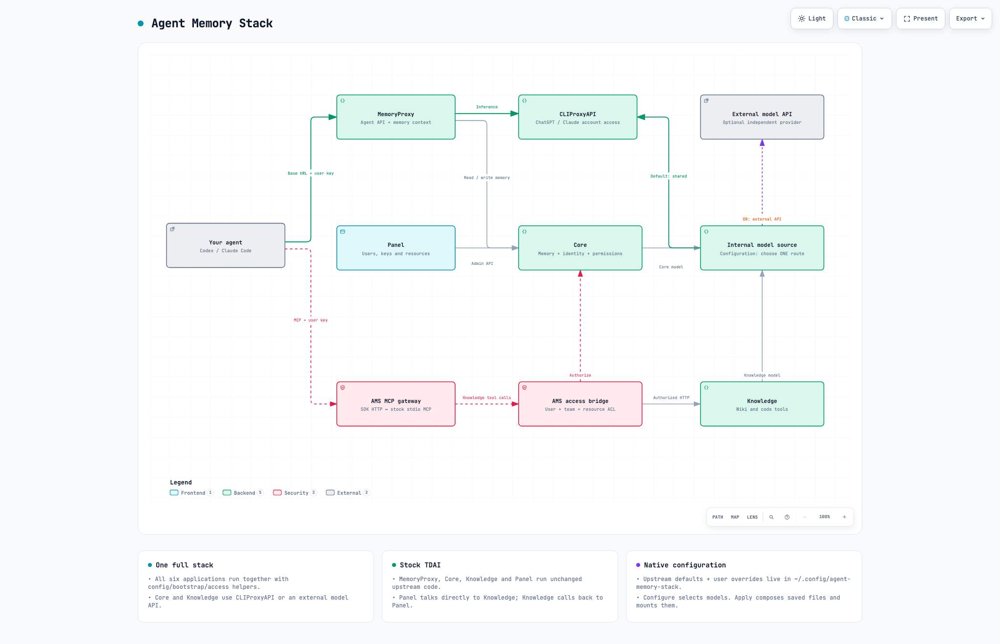

Your agent. Your context.
Agent Memory Stack
Your AI subscription, with a memory stack you run yourself.
Bring persistent memory, reusable skills, Wiki and CodeGraph to your coding agent. Connect your existing model accounts and access project knowledge through remote MCP, from your laptop or your own server.


Explore the architecture
The big picture
Stack overview
Explore the complete stack, unchanged TDAI services, and the choice of CLIProxyAPI or an external API for internal models.
Explore the stack A closer lookInside the MCP bridge
Follow authenticated HTTP through the official MCP SDK to TDAI's stock stdio tools, with a separate process for each HTTP POST.
Explore MCPSet up your stack
- Run
amsand select Configure stack. Choose the model source and the Core and Knowledge models. - Keep upstream templates in
~/.config/agent-memory-stack/defaults/and your settings inoverrides/. Configure fills the settings it knows; you control the remaining native options. - Run
ams applyto apply the saved files and start the complete stack. Use Show connection details for addresses and credentials.
TDAI updates refresh the upstream defaults while preserving your overrides. AMS supplies configuration and transport integration; TDAI runs with its native behavior.